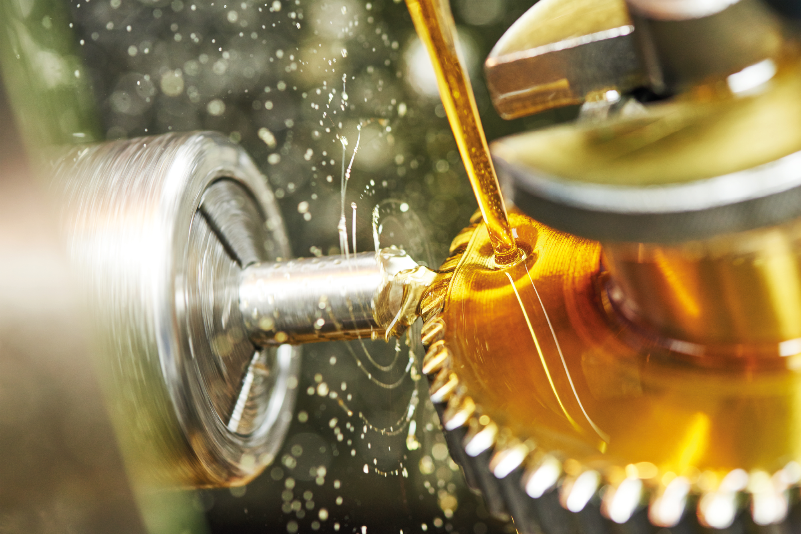

Introduction:
Fuels and lubricants play a crucial role in powering modern society, but their production and use have significant environmental and social impacts. Sustainable development aims to address these impacts by promoting sustainable practices in the production and use of fuels and lubricants.
Sustainable practices in the production and use of fuels and lubricants:
Renewable sources: The use of renewable sources, such as biofuels, can help to reduce the environmental impact of fuels and lubricants production by reducing greenhouse gas emissions and dependence on fossil fuels.
Green chemistry: Green chemistry principles can help to reduce the environmental impact of fuel and lubricant production by minimizing the use of hazardous chemicals and reducing waste.
Sustainable packaging: Implementing sustainable packaging practices can help to reduce the environmental impact of fuels and lubricants by reducing waste and promoting recycling.
Efficient use: Using fuels and lubricants in an efficient and targeted manner can reduce waste and the need for excessive use of these products.
Extended producer responsibility: Implementing extended producer responsibility programs can help to reduce the environmental impact of fuel and lubricant disposal by requiring manufacturers to take responsibility for the end-of-life management of their products.
Benefits of sustainable practices in the production and use of fuels and lubricants:
Environmental protection: Sustainable practices in the production and use of fuels and lubricants can help to reduce greenhouse gas emissions and minimize the use of hazardous chemicals, thereby protecting the environment.
Social progress: Sustainable practices in the production and use of fuels and lubricants can promote social progress by improving the health and well-being of workers and local communities.
Economic growth: Sustainable practices in the production and use of fuels and lubricants can create new industries and jobs in sustainable practices, leading to economic growth and job creation.
Energy security: The use of renewable fuels and lubricants can help to reduce dependence on fossil fuels and enhance energy security.
Public health: Sustainable practices in the production and use of fuels and lubricants can help to promote public health by reducing the environmental and social impacts of these products.
Conclusion:
Sustainable development aims to address the environmental and social impacts of fuels and lubricants production, use, and disposal. Key strategies for achieving sustainability in the production and use of fuels and lubricants include the use of renewable sources, green chemistry, sustainable packaging, efficient use, and implementing extended producer responsibility programs. Achieving sustainability in the production and use of fuels and lubricants has several benefits, including environmental protection, social progress, economic growth, energy security, and improved public health.